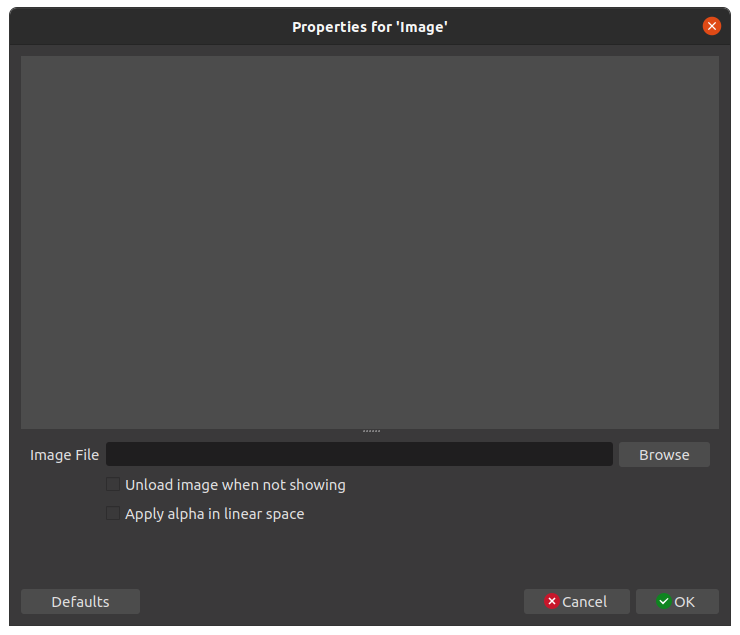

1. On Ubuntu 20.04 and up, OBS Studio can be found on the Ubuntu Software application
2. When we click on OBS Studio, we are shown a description and image of the application is shown.
3. After the download and installation is finished, OBS Studio can be found by pressing the "Show Applications" button (3x3 grid on bottom-left of screen).
This means the Ubuntu Software application was able to successfully install OBS Studio.
4. When OBS Studio is launched for the first time, the application successfully opens.
A popup also appears asking us if we want to reset the UI.
As this is the first time OBS has been opened, there is no reason for this popup to appear,
and is worth noting as an issue.
I clicked Yes to reset the UI
5. After "resetting" the UI, an "Auto-Configuration Wizard" appears.
I left this on the default setting (Optimize for streaming).
6. The wizard gives us a popup to connect a streaming service. I chose Twitch.
When I tried to connect my account (the reccomended option),
the following Twitch Login popup showed:
7. However, when I entered my login info, I received the following error:
8. I next tried the alternative option, using a stream key.
The "Get Stream Key" button opens Twitch's Creator Dashboard, where the stream key can be found
9. I paste the stream key in. This does not throw any errors, and I continue the Auto-Configuration Wizard
10. The Wizard then runs bandwidth tests to apply ideal settings for streaming:
11. After this has finished, we are shown the results of the bandwidth testing's findings,
and are given an option to apply the settings, which I choose to do.
12. Next, the following message is shown:
13. I click "Yes", and another popup appears.
The settings are already prefilled with default values.
I leave the values unchanged and click "Ok"
14. After settings the WebSockets Server Settings, no more popups appear, and OBS appears as the following:
This concludes the installation and first-time setup of OBS Studio
OBS Studio is straightfoward to install on Ubuntu 20.04 LTS, requiring no advanced technical knowledge to do so.
However, the initial configuration was not without the following usability issues:
The user was prompted to reset the UI upon the first startup. There is nothing to reset at this point.
The user was unable to connect their twitch account to OBS, and had to use a stream key to authenticate instead.
Usability Testing:
First, we will test OBS's ability to find sources and add them to the capture. To do this
we will run the following tests:
Capture the user's desktop.
Capture a specified window on the user's desktop
Capture webcam footage
Add an image overlay to the recording
Add a video overlay to the recording
Add a text overlay to the recording
Read text from a file and have it overlay the recording
Capture audio from the user's desktop (INC)
Capture microphone audio (INC)
Next, we will tests OBS's streaming and recording capabilities:
Stream to Twitch.tv
Record and save videos onto the user's hard drive
Change recording resolution
Change recording framerate
Change recording bitrate
Change audio bitrate
Have seperate quality settings for streaming and recording
See capturing statistics
When going through these tests, we will be considering the following questions:
Is the user able to complete the task?
How long does it take for the user to complete the task?
Is the user satisfied with the product's ability to do the task?
What improvements could be made to benefit performance/user experience?
OBS comes with a barebones configuration, and we must set up basic docks before we can do anything as a user. The following video demonstrates how to do so:
The user is able to complete this task with zero hiccups. However, if the user is not already familiar with OBS, this task could take time to do. This could be a
potential source of frusturation with the user, as the application (by default) is essentially just a black screen with no options. I do not believe this is
good product design, as (just about) every user will be using these docks to configure their capturing. To improve the usability of OBS, I would suggest having
these docks enabled by default.
Capturing the user's desktop:
Within the sources dock, the user is able to click the "+" button to add a source. Upon pressing this button, a large array of sources pops up. From the popup, we
will select Screen Capture (XSHM). Then, the following popup will appear:
As we do not have any existing sources to choose from, we will use the default "Create new" option. The "Make source visible" checkmark is enabled by default, and
we will leave it enabled. Upon pressing "Ok", the popup closes, and another popup opens:
OBS Studio by default is able to detect our desktop. As the laptop this is tested on has no secondary screens, the "Screens" dropdown menu only has the one option
already selected. "Capture cursor" is checked by default, and "Advanced Settings" is left unchecked. All cropping options are set to 0 by default. If the user
desires to crop the capture of the screen, they are able to input numbers into these fields. These numbers will crop the screen by the specified amount of pixels
from that direction. In the following test, I am able to successfully crop the capture to only show the clock at the top-center of GNOME:
Upon checking "Advanced Settings", only one more option pops up:
Our user has no use for the X server option, so we will not be testing this setting.
Once we hit "Ok", the popup closes, and we return to the main OBS application:
As our cropped capture is rather small, it only takes up a corner of the screen. We are able to use the red borders to drag and resize the capture, like so:
Our source is now added to the sources list in the bottom-left dock. If we double-click on our source, we are able to reset the cropping back to zero. Note that doing
this does not override the manual scaling we did in the video above, so we must scale it back after pressing "Ok", or else we just have a zoomed in view of the desktop:
After about 15-20 seconds of manually rescaling it to fit the capture, we are left with this:
Overall, the user was able to easily complete the task. It did not take long for the user to set up a desktop capture, and OBS makes it extremely intuitive to do so. The only
hiccup seemed to be the lack of a "reset scaling" button (in an easy to find place, at least), as it took about 20 seconds to accomplish what could be done in a single button click,
if that button was placed in an easy to find location.
Capture a specified window on the user's desktop
We use the same method to add a source as used before. This time we select "Window Capture (Xcomposite)" and the following popup shows:
We press "Ok", and are sent to the configuration menu:
Here, we are given a dropdown of all open windows on the system. In this case, the user chooses the select a notepad with the text "Hello World!" written on it.
This configuration menu is very similar to that of the Desktop Capture.
There are some additional options, but these are not very useful to our user.
Upon exiting the configuration, the window capture correctly shows on OBS:
Capture webcam footage
Using the same method as before, we add a new source. This time we select "Video Capture Device (V4L2)":
OBS is able to automatically detect our webcam and show live footage!
There are some options to manipulate the image displayed on the camera. The sliders appear to be functional, and changes to them appear in the preview:
Once the configuration menu is closed, our webcam footage correctly shows on OBS:
Add an image overlay to the recording
Using the same method as before, we add a new source. This time we select "Image":
Here, we are given an option to select an image file:

A popup appears that allows us to navigate our directories to select the image:
Once the image is selected and the configuration is exited, we are able to see our image on OBS. Note that this image is transparent,
and image transparency seems to be fully functional in OBS (although it is hard to tell from the screenshot below).
Add a GIF to the recording
The user is able to double-click the existing image element to re-open the configuration menu. They are able to select a different file, and in this case upload a cat gif:
GIF support appears to be fully functional in OBS.
Add a text overlay to the recording
There are two options for text sources in OBS-- "Text (FreeType 2)" and "Text (Pango)." In this case, the user chooses the first option to pop up (FreeType 2):
The configuration menu greets us with an empty preview and a text box. We are able to type text into the box, and the preview updates responsively:
Upon exiting the configuration menu, everything appears to be working:
Read text from a file and have it overlay the recording
The following video demonstrates the usability testing for reading text from a file. In this video, we attempt to read text from a file. We test to see if OBS is
able to update the text on the recording when the contents of the file change.
As this video demonstrates, reading from a file appears to be completely broken on the FreeType 2 based text source. Clicking the "read from file" check box does
not seem to do anything. Users who would like to read text from a file must use the Pango option. For the user, it is not clear to them why there are two different
source options that appear identical, except for this issue.